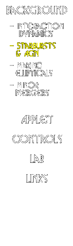
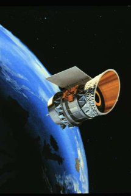
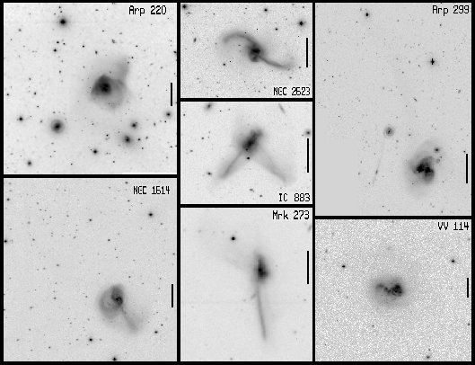
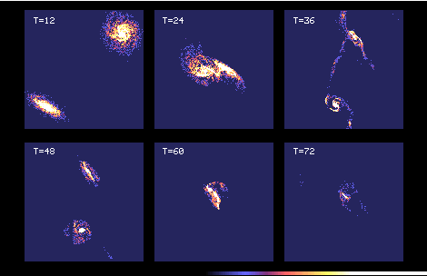
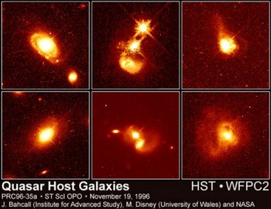

|  |
Starbursts and Active Nuclei in Interacting Galaxies
|
With the launch of the infrared astronomy satellite (IRAS) in 1983, a new population of galaxies was identified which have extremely high, quasar-like luminosities >=1012 Lsolar in the infrared (8-1000 micrometers). This emission is believed to come from hot (T~50-60 K) dust reradiating energy from a central starburst or active nucleus. The exact details of the energy generation -- starburst versus AGN -- remain controversial, and many ultraluminous infrared galaxies (ULIRGs) show evidence for both starburst and AGN activity. The difficulty of course lies in the fact that the nuclei of ULIRGs are, almost by definition, extremely dusty environments, and seeing into the central regions is a very difficult task. Evidence suggests that in some cases the nuclear dust is optically thick even at X-ray wavelengths; finding unequivocal evidence of an AGN in such systems will be very hard indeed. |
 |
| Figure 6: Artists conception of the IRAS satellite in orbit. (IPAC) |
While the details of the energy source in ULIRGs remain elusive, the causal
connection between ULIRG activity and galaxy interactions is clear. Nearly all
ULIRGs show morphological evidence for strong interactions, either through
double nuclei, severely distorted isophotes, or strong tidal features. Yet the
converse is not true; that is, not all strongly interacting galaxies show
ultraluminous activity. In fact, the most dramatic nearby mergers, such as
the Antennae (NGC 4038/39) or NGC 7252, have experienced violent collisions,
yet have infrared luminosities an order of magnitude less than the extreme
ULIRGs. Clearly the detailed triggering mechanism for ultraluminous activity
must depend on a variety of factors.
|  |
| Figure 7: Optical images of ultraluminous infrared galaxies. ( John Hibbard, NRAO) |
How do mergers trigger ultraluminous activity? Regardless of whether the central engine is a starburst or an AGN, the first prerequisite is a large supply of fuel in the form of nuclear gas. If galaxy collisions can drive gas inwards from the galaxies' disks into their nuclei, this nuclear inflow can feed the central engine. Once the gas reaches the inner kiloparsec, it can either fragment and form stars (at a rate of ~ 100 Msolar yr-1 to provide the observed luminosity), or continue to flow inwards and fuel an AGN.
The first step, then, is to drive gas inwards from the disk to the nucleus.
Computer simulations have demonstrated the efficacy of interactions and
mergers at driving these nuclear gas flows. These simulations must also
describe the hydrodynamic evolution of the interstellar gas, and do so using
a Langrangian technique known as ``smoothed particle hydrodynamics,''
in which the gas is represented by discrete fluid elements (particles)
which carry the local thermodynamic and hydrodynamic properties of the
fluid. These properties are updated according to hydrodynamic conservation
laws, and artificial viscosity is included to model shocks. This technique
is ideal for simulating gas flows in interacting galaxies, which lack the
symmetry and geometry needed for efficient grid-based hydrodynamical
algorithms.
|  |
Figure 8: Computer model of colliding galaxies. The model is the same as in Figure 4, except this time the gas component of the galaxies. Note how most of the gas is sent to the very center of the merging galaxies. |
As an example, Figure 8 shows the evolution of the interstellar gas in the merger model of Figure 4. Shortly after the galaxies first collide, and the strong bars and spiral features form from the self-gravitating response of the disks, gas shocks and crowds along the leading edge of these features. Because of the offset between the stellar and gaseous density peaks, the gas feels a strong gravitational torque from the stars, losing angular momentum and flowing inwards towards the nucleus. How far inwards it can flow depends on the detailed response of the disk. If the disk develops a strong bar, the gas can flow into the central kiloparsec on a dynamical timescale; however, if the disk is stable against bar formation, the gas tends to ``hang up'' in the inner few kiloparsecs. In this case, once the galaxies ultimately merge a second phase of inflow occurs, as gas is driven further inwards to the nucleus due to the strong hydrodynamic and gravitation torques at work.
Because the inflow is tied to the (largely internal) gravitational response of the galaxies to the interaction, the triggering of inflow and nuclear activity depends on a variety of factors, such as the internal structure of the galaxies involved and the orbital geometry of the collision. Prograde collisions drive inflow and activity more rapidly than retrograde collisions, due to the spin-orbital coupling of the encounter. If the encounter involves disk galaxies with massive central bulges, the inflow should be delayed until the galaxies merge, due to the disk stability provided by the central bulges. Conversely, without bulges, disk galaxies should be more prone to early bar formation, inflow, and central activity. Similarly, galaxies in which the disk contributes little to the dynamical mass (e.g., low surface brightness disk galaxies) will also be more resistive to inflow, as the self gravity of the disk is much weaker. Of course, in any case the galaxies themselves must have sufficient disk gas to drive inwards to begin with; collisions of gas-poor spirals will be less effective at fueling ultraluminous levels of activity.
Once triggered, the ultraluminous infrared phase probably does not last long -- less than ~ 108 years. A variety of arguments support this claim. Stellar population synthesis models successfully explain the optical and infrared spectra of ULIRGs with a burst of star formation ~ 107 - 108 years old. Similar numbers come from gas depletion arguments: if the luminous activity arises from star formation, the gas depletion time is given by Tdeplete ~ Mgas/SFR ~ 107 - 108 years (where SFR is the star formation rate). Of course, if the luminosity comes from accretion onto an AGN, the same amount of gas can sustain ultraluminous activity for a much longer period of time.
| However, the fact that nearly all ULIRG systems show strong dynamical evidence that they are in the late stages of a merger -- evidence which fades rapidly once the merger is complete -- argues that the ultraluminous phase cannot last much longer than a half-mass dynamical timescale, ~ 108 years. In this latter case of AGN accretion, the end of the ultraluminous IR phase may be marked either by an end to AGN fueling, or else the destruction of the ``dust shroud'' by the intense UV radiation field of the AGN. In this second scenario, rather than running out of gas, the ULIRG may simply evolve into a bona-fide optical quasar. The detailed evolution of ULIRGs is a subject of intense current study. |  |
Figure 9: Hubble Space Telescope images of quasar host galaxies. Note the disturbed shapes, tidal tails, and galaxy pairs. (STScI) |
 |
 |